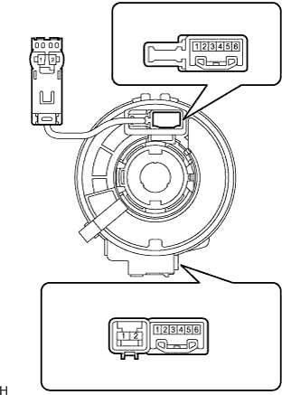

Spiral cable SUB-ASSY single inspection |
| 1. Spiral cable SUB-ASSY inspection |
|  |
Use SST (Toyota Electrical Tester) to inspect the conversation between each terminal of the spiral cable.
| Tester connection | Measurement conditions | standard |
|---|---|---|
| B1 (D+) ← → D1 (D+) | Always | There is an conductor |
| B2 (D-) ← → D2 (D-) | Always | There is an conductor |